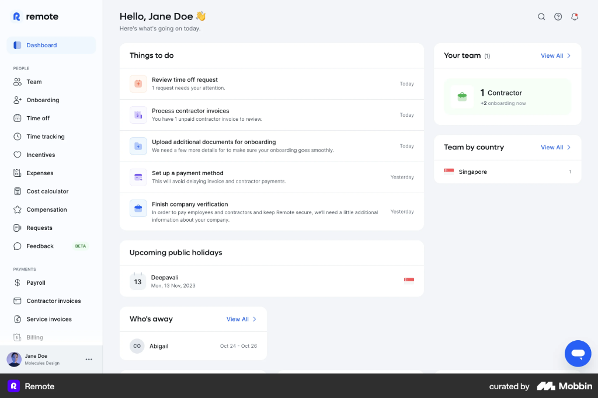

收工牌 Design System · v1.0 已确认
清爽的控制台，温暖的收工
v0.2 参考 Remote 仪表盘：浅灰画布 + 白色大圆角卡片、分组侧栏、彩色图标小方块、“标题 + 说明 + 时间”的列表行、右上角工具按钮和右下角悬浮按钮。收工牌在此基础上保留三处自己的东西：设备实时镜像、状态色系统、落日渐变的收工卡片。
下午好，阿杰 会议中
10 月 30 日 周五 · 今天的计划 18:00 收工
当前状态
会议中还剩 42 分钟
来自计划表“工作日模板”· 11:30 自动切回工作中
工作中
勿扰
会议中
专注 25′
休息中
自定义
Agent 需要你的输入 待处理Claude Code 在“重构登录模块”任务中等待你确认
3 分钟前提交本周周报下班前提醒 · 到点时设备和手机同时提示
今天 17:30带狗狗去看医生语音创建 · 收工后在设备上显示，仅自己可见
收工后起来活动一下已连续“工作中”45 分钟时提醒
约 32 分钟后11:30周五
工作中会议结束后自动切换
2.5 小时14:00周五
会议中 · 需求评审设备显示“会议中 14:00–15:00”，手机进入勿扰（已授权）
1 小时18:00周五
已下班自动收工并生成今日状态回顾
收工
距离计划收工
02:48:10
18:00 会自动切换为“已下班”，也可以现在就收工。
陈陈姐最后更新 09:42 · 可能已过期
状态未知
你正在分享当前状态只分享状态，不分享计划和待办
管理
一二三四五
工作中会议中勿扰休息
状态时长只反映你设置的状态，不代表工作效率
说一句话，创建提醒
00
参考来源
左：用户提供的 Remote 仪表盘参考图。右侧列出我们具体借鉴了哪些做法。

从 REMOTE 借鉴
浅灰画布 + 白色大圆角卡片，卡片标题栏和内容之间用细线分隔
分组侧栏：小号灰色分组标题，选中项为浅主色底 + 主色文字，底部固定个人信息
彩色图标小方块 + “标题 / 一行说明 / 右侧时间”的列表行
“查看全部 ›”链接、计数（4）、测试版徽标、右上角搜索/帮助/通知
右下角悬浮按钮：我们用作“语音创建提醒”（PRD 3.14）
不照搬它的 HR / 薪资信息结构；不使用 emoji 作为界面元素
01
色彩
中性色铺底；主色靛蓝用于导航、链接和主按钮；落日渐变只给“收工”。
主色 Primary#4C5CF6 → #8B5CF6
落日 Sunset#FF9A5A → #F2643A → #E8436B
图标小方块（浅底 + 同色图标）
提醒 · 计划 · Agent · 休息 · 语音 · 隐私
02
状态色系统
网页、RGB 灯、OLED 屏三端一致。OLED 是黑底白字的单色屏，所以每个状态都配一个图案。界面上状态始终是“颜色 + 文字”，不只靠颜色。
工作中#22A06B · 灯：绿常亮 · 图案：空心圆
忙碌 / 勿扰#E5484D · 灯：红常亮 · 图案：实心圆
专注中#B4232C · 灯：红慢呼吸 · 图案：半圆
会议中#7C5CFA · 灯：紫常亮 · 图案：斜线
休息中#0EA5B7 · 灯：青色 · 图案：点阵
已下班#3B4252 · 灯：熄灭 · 图案：月亮
03
字体与文案
只用系统字体，不加载海外字体；数字和时间用等宽字体，倒计时不跳动。
清爽的控制台
Display 36/700 · 官网首屏、收工完成页
下午好，阿杰
H1 页面标题 26/700
今天要做的
H3 卡片标题 16/700
提交本周周报
列表标题 14/600
下班前提醒 · 到点时设备和手机同时提示
说明 12.5/400
02:48:10
Timer 等宽 40/700 · tabular-nums
文案原则
今天在“工作中”状态 6 小时 20 分
你今天工作了 6 小时，效率超过 80% 的同事
陈姐 · 最后更新 09:42 · 可能已过期
陈姐 · 工作中（实际已离线 3 小时）
iOS 不允许网页直接开启专注模式，可以改用快捷指令
04
基础组件
按钮、徽标、连接状态、列表行、空状态、撤销提示。
按钮
徽标与状态标签
测试版新待处理
工作中状态未知
连接状态（始终可见）
蓝牙已连接
同一 Wi‑Fi
ESP-NOW 网关
离线 · 18:02
还没有连接收工牌用 Chrome 或 Edge 打开本页，点击下方按钮，通过蓝牙连接设备。
05
手机端
同一套卡片，侧栏变为底部 5 个标签页；收工卡片固定在首屏。
布局与尺寸
断点 <640 手机单列 + 底部标签页；640–1100 侧栏可收起、卡片单列；≥1100 侧栏 236px + 主列 1.7 : 副列 1
间距 4 的倍数；卡片之间 20px，卡片内边距 20–22px，列表行高约 64px
圆角 徽标 6 · 控件/图标方块 10 · 卡片 16 · 外框 22 · 按钮和状态标签全圆角
阴影 卡片只用极浅阴影 + 1px 线；悬浮按钮、浮层、设备镜像用较深阴影
图标 24 网格线性图标，线宽 1.8，圆角端点；开发时建议用 Lucide 图标库统一风格
动效 悬停 150ms；状态切换时设备镜像做 OLED 式瞬时淡入过渡；收工完成播放一次落日渐变；尊重“减少动态效果”